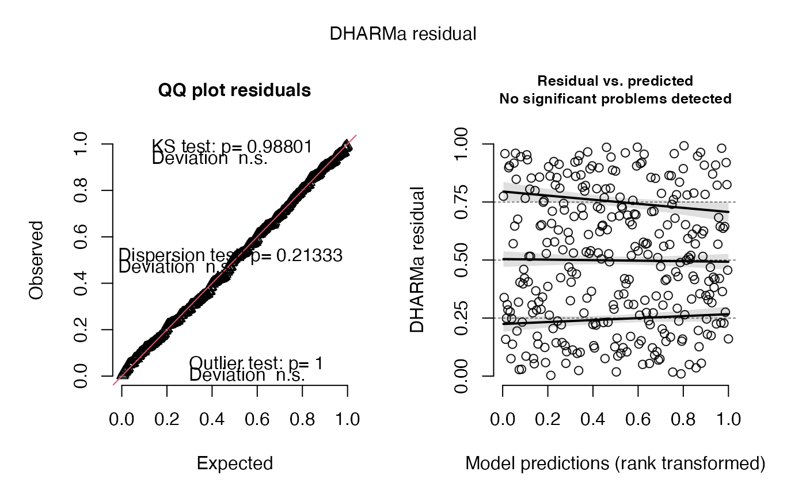
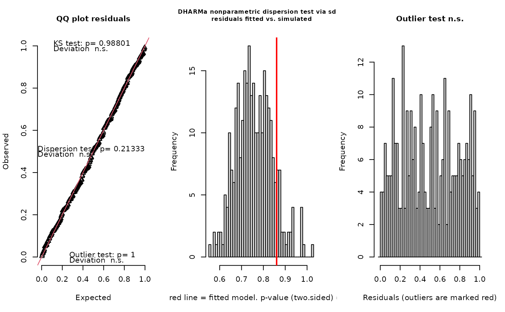
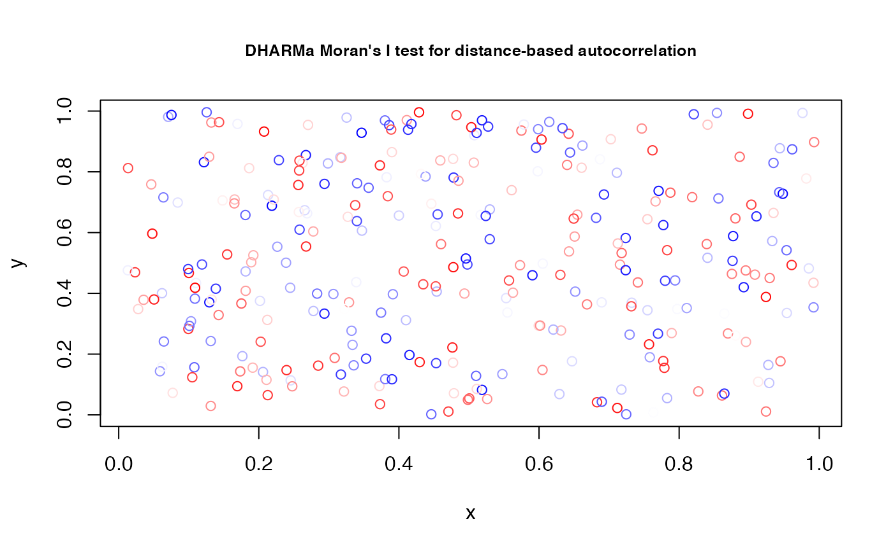
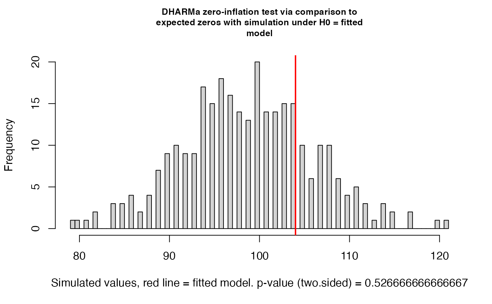

simulate.sdmTMB is an S3 method for producing a matrix of simulations from
a fitted model. This is similar to lme4::simulate.merMod() and
glmmTMB::simulate.glmmTMB(). It can be used with the DHARMa package
among other uses.
Usage
# S3 method for sdmTMB
simulate(
object,
nsim = 1L,
seed = sample.int(1e+06, 1L),
params = c("mle", "mvn"),
model = c(NA, 1, 2),
re_form = NULL,
tmbstan_model = NULL,
...
)Arguments
- object
sdmTMB model
- nsim
Number of response lists to simulate. Defaults to 1.
- seed
Random number seed
- params
Whether the parameters used in the simulation should come from the Maximum Likelihood Estimate (
"mle") or from new draws from the joint precision matrix assuming they are multivariate normal distributed ("mvn").- model
If a delta/hurdle model, which model to simulate from?
NA= combined,1= first model,2= second mdoel.- re_form
NULLto specify a simulation conditional on fitted random effects (this only simulates observation error).~0orNAto simulate new random affects (smoothers, which internally are random effects, will not be simulated as new).- tmbstan_model
An optional model fit via
tmbstan::tmbstan(). If provided the parameters will be drawn from the MCMC samples and new observation error will be added. See the example inextract_mcmc().- ...
Extra arguments (not used)
Examples
if (inla_installed()) {
# start with some data simulated from scratch:
set.seed(1)
predictor_dat <- data.frame(X = runif(300), Y = runif(300), a1 = rnorm(300))
mesh <- make_mesh(predictor_dat, xy_cols = c("X", "Y"), cutoff = 0.1)
dat <- sdmTMB_simulate(
formula = ~ 1 + a1,
data = predictor_dat,
mesh = mesh,
family = poisson(),
range = 0.5,
sigma_O = 0.2,
seed = 42,
B = c(0.2, -0.4) # B0 = intercept, B1 = a1 slope
)
fit <- sdmTMB(observed ~ 1 + a1, data = dat, family = poisson(), mesh = mesh)
# simulate from the model:
s1 <- simulate(fit, nsim = 300)
dim(s1)
# test whether fitted models are consistent with the observed number of zeros:
sum(s1 == 0)/length(s1)
sum(dat$observed == 0) / length(dat$observed)
# use the residuals with DHARMa:
if (require("DHARMa", quietly = TRUE)) {
pred_fixed <- fit$family$linkinv(predict(fit)$est_non_rf)
r <- DHARMa::createDHARMa(
simulatedResponse = s1,
observedResponse = dat$observed,
fittedPredictedResponse = pred_fixed
)
plot(r)
DHARMa::testResiduals(r)
DHARMa::testSpatialAutocorrelation(r, x = dat$X, y = dat$Y)
DHARMa::testZeroInflation(r)
}
# simulate with the parameters drawn from the joint precision matrix:
s2 <- simulate(fit, nsim = 1, params = "MVN")
# simulate with new random fields:
s3 <- simulate(fit, nsim = 1, re_form = ~ 0)
# simulate with new random fields and new parameter draws:
s3 <- simulate(fit, nsim = 1, params = "MVN", re_form = ~ 0)
# simulate from a Stan model fit with new observation error:
# \donttest{
if (require("tmbstan", quietly = TRUE)) {
stan_fit <- tmbstan::tmbstan(fit$tmb_obj, iter = 110, warmup = 100, chains = 1)
# make sure `nsim` is <= number of samples from rstan
s3 <- simulate(fit, nsim = 10, tmbstan_model = stan_fit)
}
# }
}
#> This is DHARMa 0.4.6. For overview type '?DHARMa'. For recent changes, type news(package = 'DHARMa')


#> $uniformity
#>
#> Asymptotic one-sample Kolmogorov-Smirnov test
#>
#> data: simulationOutput$scaledResiduals
#> D = 0.025868, p-value = 0.988
#> alternative hypothesis: two-sided
#>
#>
#> $dispersion
#>
#> DHARMa nonparametric dispersion test via sd of residuals fitted vs.
#> simulated
#>
#> data: simulationOutput
#> dispersion = 1.1336, p-value = 0.2133
#> alternative hypothesis: two.sided
#>
#>
#> $outliers
#>
#> DHARMa outlier test based on exact binomial test with approximate
#> expectations
#>
#> data: simulationOutput
#> outliers at both margin(s) = 1, observations = 300, p-value = 1
#> alternative hypothesis: true probability of success is not equal to 0.006644518
#> 95 percent confidence interval:
#> 8.438913e-05 1.843125e-02
#> sample estimates:
#> frequency of outliers (expected: 0.00664451827242525 )
#> 0.003333333
#>
#>

#>
#> SAMPLING FOR MODEL 'tmb_generic' NOW (CHAIN 1).
#> Chain 1:
#> Chain 1: Gradient evaluation took 0.000307 seconds
#> Chain 1: 1000 transitions using 10 leapfrog steps per transition would take 3.07 seconds.
#> Chain 1: Adjust your expectations accordingly!
#> Chain 1:
#> Chain 1:
#> Chain 1: WARNING: There aren't enough warmup iterations to fit the
#> Chain 1: three stages of adaptation as currently configured.
#> Chain 1: Reducing each adaptation stage to 15%/75%/10% of
#> Chain 1: the given number of warmup iterations:
#> Chain 1: init_buffer = 15
#> Chain 1: adapt_window = 75
#> Chain 1: term_buffer = 10
#> Chain 1:
#> Chain 1: Iteration: 1 / 110 [ 0%] (Warmup)
#> Chain 1: Iteration: 11 / 110 [ 10%] (Warmup)
#> Chain 1: Iteration: 22 / 110 [ 20%] (Warmup)
#> Chain 1: Iteration: 33 / 110 [ 30%] (Warmup)
#> Chain 1: Iteration: 44 / 110 [ 40%] (Warmup)
#> Chain 1: Iteration: 55 / 110 [ 50%] (Warmup)
#> Chain 1: Iteration: 66 / 110 [ 60%] (Warmup)
#> Chain 1: Iteration: 77 / 110 [ 70%] (Warmup)
#> Chain 1: Iteration: 88 / 110 [ 80%] (Warmup)
#> Chain 1: Iteration: 99 / 110 [ 90%] (Warmup)
#> Chain 1: Iteration: 101 / 110 [ 91%] (Sampling)
#> Chain 1: Iteration: 110 / 110 [100%] (Sampling)
#> Chain 1:
#> Chain 1: Elapsed Time: 1.399 seconds (Warm-up)
#> Chain 1: 0.111166 seconds (Sampling)
#> Chain 1: 1.51017 seconds (Total)
#> Chain 1:
#> Warning: There were 1 chains where the estimated Bayesian Fraction of Missing Information was low. See
#> https://mc-stan.org/misc/warnings.html#bfmi-low
#> Warning: Examine the pairs() plot to diagnose sampling problems
#> Warning: The largest R-hat is 2.05, indicating chains have not mixed.
#> Running the chains for more iterations may help. See
#> https://mc-stan.org/misc/warnings.html#r-hat
#> Warning: Bulk Effective Samples Size (ESS) is too low, indicating posterior means and medians may be unreliable.
#> Running the chains for more iterations may help. See
#> https://mc-stan.org/misc/warnings.html#bulk-ess
#> Warning: Tail Effective Samples Size (ESS) is too low, indicating posterior variances and tail quantiles may be unreliable.
#> Running the chains for more iterations may help. See
#> https://mc-stan.org/misc/warnings.html#tail-ess
